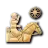
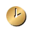
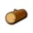

The Document Picture-in-Picture API opens a real always-on-top OS window containing live DOM. Render the current focus-mode step into it and a single-monitor player gets a build-order overlay above their windowed-fullscreen game, with no external tool and no install. It replaces what the overlay export does through a third-party app. Chrome and Edge support it; everything else keeps today's behaviour.
One component, three density tiers. The same FocusMode.vue renders full-screen on desktop, on a phone, and inside a 400×230 floating window. Tiers are driven by a container query on the focus-mode root, not by $vuetify.display — the PiP window is its own document, so viewport breakpoints report the wrong thing there.
Integration steps
Feature-detect once — 'documentPictureInPicture' in window. Expose it as a computed on the build page; when false the floating-window option is simply not rendered.
Move, don't duplicate. Request the window, then append the existing focus-mode element into pipWindow.document.body. Vue keeps the same component instance, so the timer, step index, autoplay state and voice-over continue uninterrupted. On pagehide, move the node back into the dialog.
Carry the styles across. Clone every <style> and stylesheet <link> into the PiP document — Vuetify's generated theme CSS included — then set colorScheme and the theme class on its <html>.
Rebind keys. The existing keyup listener is bound to the parent document. Bind the same handler to pipWindow.document for the window's lifetime so ←/→/space still work while the game has focus and the user clicks the overlay.
Drop the wake lock while floating.useWakeLock stays for the phone case; a PiP window on desktop doesn't need it, and requesting it from a background tab fails anyway.
Voice-over keeps working. Speech synthesis lives on the parent window, unaffected by the move — one of the reasons to move the node rather than re-mount it.
Entry point: a split play button on the build page (right), plus a "Pop out" control inside focus mode so a session already running can be sent to the floating window.
Sketch
// composables/builds/useStepPiP.jsexport function useStepPiP(rootEl) {
const supported = 'documentPictureInPicture' in window;
const active = ref(false);
async function open() {
const pip = await documentPictureInPicture.requestWindow(
{ width: 400, height: 230, disallowReturnToOpener: false });
// carry Vuetify + component CSS across
[...document.styleSheets].forEach((s) => {
const el = s.ownerNode.cloneNode(true);
pip.document.head.appendChild(el);
});
pip.document.documentElement.className =
document.documentElement.className;
const home = rootEl.value.parentElement;
pip.document.body.appendChild(rootEl.value);
active.value = true;
pip.addEventListener('pagehide', () => {
home.appendChild(rootEl.value); // state survives
active.value = false;
});
}
return { supported, active, open };
}
Fallback, unchanged. Firefox and Safari get the current full-screen dialog, the phone QR handoff and the overlay export. Nothing is removed; PiP is an extra door.
Entry point
Make play the primary action
Today play is an 12px text link in the section header, the same weight as the header label itself — the one thing a player does right before a match is the least visible control on the page. Promote it to a filled gold button with a split menu carrying the two output targets.
Now
Build OrderPLAY
0:00666->
0:2576+

->
Proposed
Build Order
0:00666->
0:2576+->
Play hereFull-screen focus mode in this tab.
Floating windowNewStays above the game on one monitor.
Send to phoneQR code, opens focus mode there.
Overlay export stays where it is, in the build's overflow menu — it hands off to another app rather than starting a session here. The default click plays; the caret is only for choosing a different target, and it remembers the last choice per user. The header keeps its 36px height — the button is 28px, so the Build Order card still lines up with the Description and Timeline sections above it. On xs the pair becomes a full-width button above the step table, so the action is reachable without scrolling the build list.
Light theme
Same control, navy primary
Build Order
0:00666->
Focus mode · mobile
Fill the screen with the step
Today the step floats in the middle of a tall empty card while the resource strip sits at the bottom with blank columns. Three fixed rows instead: header, step, dock. The step area takes all remaining height and scales its own type, resources render only where the build sets a value, and the next timing is always visible so you know how long you have.
The preview line carries the timing plus one token, and only when there is one: the resource change the next step asks for (+1 gold), or an age-up (⬆ Feudal), which always wins. Repeating the next step's full villager spread would just duplicate the dock a second later, and a second line of small grey text is the first thing that gets ignored mid-game.
Ottoman | Fast Imperial (Pax Otomana rush)
3/42
6→(1 more; total of 7)
next 0:45 · +1 gold

0:25
7
6

1
Focus mode · floating window
Two tiers below phone size
The user can resize a PiP window freely, so the layout has to survive down to a strip. At the default 400×230 the dock stacks under the step; below roughly 340×190 the title bar drops (the OS window already shows the build name), the dock turns into one row, and only time plus villager count survive from the resource strip. Everything stays above 26px hit targets — this is clicked mid-game.
400 × 230 — default
Ottoman | Fast Imperial — AOE4 Guides
Ottoman | Fast Imperial (Pax Otomana rush)
3/42
6→
next 0:45 · 8 vils
0:25
7
6
1
320 × 150 — minimum
Ottoman | Fast Imperial
6→
0:25
7
Tiers come from @container focus (max-width: …) on the focus-mode root, so the same rules apply in the dialog, on a phone in landscape, and in the PiP window without a second component.
Live check
Try the real API
This opens an actual Document Picture-in-Picture window with the compact tier inside — same technique as the sketch, node moved rather than copied. Chrome or Edge only; if your browser refuses, the status line says why. Open this file in a browser tab rather than the preview pane if the request is blocked.
 ->
->